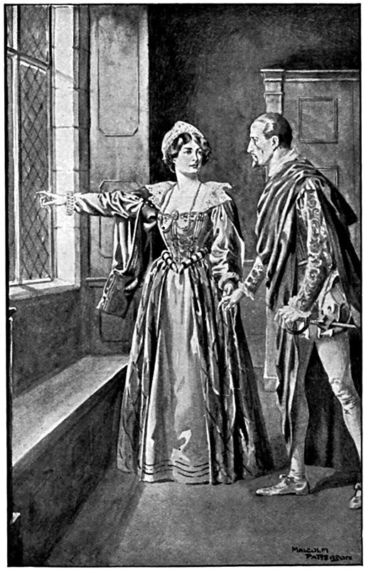

Генрих благодаря своей выдержке при допросе получил короткую передышку и забежал к мадам де Сов. Там он застал Ортона, уже совсем оправившегося от своего обморока; но Ортон мог рассказать только то, что какие-то люди ворвались к нему и что их начальник оглушил его, ударив эфесом шпаги.
Об Ортоне тогда никто не вспомнил. Екатерина, увидев его распростертым на полу, подумала, что он убит. На самом деле Ортон, очнувшись как раз в промежуток времени между уходом Екатерины и появлением командира стражи, которому было приказано очистить комнату, сейчас же побежал к мадам де Сов.
Генрих попросил Шарлотту приютить у себя Ортона до получения вестей от де Муи, который непременно напишет из своего прибежища. Тогда он, Генрих, отправит с Ортоном ответ свой де Муи и, таким образом, будет иметь там не одного, а двух преданных ему людей.
Решив поступить так, Генрих вернулся к себе и, рассуждая сам с собой, начал ходить взад и вперед по комнате, как вдруг дверь растворилась и вошел король.
– Ваше величество! – воскликнул Генрих, бросаясь к нему навстречу.
– Собственной персоной… Честное слово, Анрио, ты молодец! Я начинаю любить тебя все больше.
– Сир, ваше величество меня захвалили, – ответил Генрих.
– У тебя только один недостаток, Анрио.
– Какой? Уж не тот ли, в котором вы упрекали меня не один раз, что я предпочитаю соколиной охоте охоту с гончими?
– Нет, нет, Анрио, я говорю не об этом, а о другом.
– Если ваше величество объясните мне, в чем дело, я постараюсь исправиться, – ответил Генрих, увидев по улыбке Карла, что он в хорошем настроении.
– Дело в том, что у тебя хорошие глаза, а видишь ты ими плохо.
– Может быть, сир, я, сам того не зная, стал близорук?
– Хуже, Анрио, хуже: ты ослеп.
– Вот что! – удивился Беарнец. – Но, может быть, это случается со мной, когда я закрываю глаза?
– Да, да! Ты так и делаешь, – сказал Карл. – Как бы то ни было, я их тебе открою.
– Господь сказал: «Да будет свет, и бысть свет». Ваше величество являетесь представителем бога на земле, следовательно, ваше величество можете сотворить на земле то, что бог творит на небе. Я слушаю.
– Когда вчера вечером Гиз сказал, что встретил твою жену в сопровождении какого-то волокиты, ты не хотел верить.
– Сир, – отвечал Генрих, – как же я мог поверить, что сестра вашего величества способна на такое безрассудство?
– Тогда он прямо указал, что твоя жена отправилась в переулок Клош-Персе, но этому ты тоже не поверил!
– А разве я мог предполагать, что принцесса Франции решится открыто ставить на карту свое доброе имя?
– Когда мы осаждали дом в переулке Клош-Персе и в меня попали серебряным кувшином, Анжу облили апельсинным компотом, а Гиза угостили кабаньим окороком, разве ты не видел там двух женщин и двух мужчин?
– Сир, я ничего не видел. Ваше величество, наверно, помните, что в это время я допрашивал привратника.
– Зато я, черт подери, видел!
– А-а! Если вы, ваше величество, видели сами, то, конечно, это так.
– Да, я видел двух женщин и двух мужчин. Теперь для меня нет сомнений, что одна из этих женщин была Марго, а один из мужчин – Ла Моль.
– Однако если Ла Моль был в переулке Клош-Персе, значит, он не был здесь, – возразил Генрих.
– Нет, нет, его здесь не было, – сказал король. – Но сейчас вопрос не в том, кто был здесь, – это узнается, когда болван Морвель сможет говорить или писать. Вопрос в том, что Марго тебя обманывает.
– Пустяки! Не верьте всяким сплетням, сир, – ответил Генрих.
– Говорю тебе, что ты не близорук, а просто слеп. Смерть дьяволу! Поверь мне хоть один раз, упрямец! Говорят тебе, что Марго тебя обманывает, и мы сегодня вечером задушим предмет ее увлечения.
Генрих даже отпрянул при такой неожиданности и с изумлением посмотрел на Карла.
– Признайся, Анрио, что в глубине души ты не против этого. Марго, конечно, раскричится, как сто тысяч ворон, но тем хуже для нее. Я не хочу, чтобы тебе причиняли горе. Пусть Анжу наставляет рога принцу Конде, я закрываю глаза: Конде – мне враг; а ты мне брат, больше того – друг.
– Но, сир…
– И я не хочу, чтобы тебя притесняли, не хочу, чтобы над тобой издевались; довольно ты служил мишенью для всяких волокит, приезжающих сюда, чтобы подбирать крошки с нашего стола и увиваться около наших жен. Пусть только посмеют заниматься таким делом, черт их возьми! Тебе изменили, Анрио, – это может случиться со всяким, – но, клянусь, ты получишь удовлетворение, которое поразит всех, и завтра будут говорить: «Тысяча чертей! Король Карл, как видно, очень любит своего брата Анрио, если сегодня ночью заставил Ла Моля вытянуть язык».
– Сир, это дело действительно решенное? – спросил Генрих.
– Решено и подписано. Этому щеголю нельзя пожаловаться на свою судьбу; исполнителями будут я, Анжу, Алансон и Гиз: один король, два принца крови и владетельный герцог, не считая тебя.
– Как – не считая меня?
– Ну да, ты-то ведь будешь с нами!
– Я?!
– Да. Мы будем его душить, а ты пырни его как следует кинжалом – по-королевски!
– Сир, я смущен вашей добротой, – ответил Генрих, – но откуда вы все это знаете?
– А-а! Ни дна ему, ни покрышки! Говорят, он этим похвалялся. Он все время бегает к ней то в Лувре, то в переулок Клош-Персе. Они вместе сочиняют стихи – хотел бы я посмотреть на стихи этого фертика: какие-нибудь пасторальчики, болтают о Гионе и о Мосхосе да перевертывают на все лады Дафниса и Коридона. Знаешь что, выбери у меня трехгранный кинжал получше.
– Сир, это надо обдумать… – сказал Генрих.
– Что?
– Вы, ваше величество, поймете, почему мне нельзя участвовать в этом деле. Мне кажется, что мое присутствие будет неприличным. Я являюсь настолько заинтересованным лицом, что мое личное участие в этом возмездии покажется жестокостью. Ваше величество мстите за честь сестры нахалу, оклеветавшему женщину своим бахвальством, – такая месть вполне естественна с вашей стороны и поэтому не опозорит Маргариту, которую я, сир, продолжаю считать невинной. Но если в это дело вмешаюсь я, получится совсем другое; мое участие превратит акт правосудия в простую месть. Это будет уже не казнь, а убийство; жена моя окажется не жертвой клеветы, а женщиной виновной.
– Черт возьми! Ты, Генрих, златоуст! Я только что говорил матери, что ты умен, как дьявол.
И Карл доброжелательно взглянул на Генриха, благодарившего поклоном за этот комплимент.
– Как бы то ни было, но ты доволен, что тебя избавят от этого франтика?
– Все, что делает ваше величество, – все благо, – ответил король Наваррский.
– Ну и отлично, предоставь мне сделать это дело за тебя и будь покоен, оно будет сделано не хуже.
– Я полагаюсь на вас, сир, – ответил Генрих.
– Да! А в котором часу он обычно бывает у твоей жены?
– Часов в девять вечера.
– А уходит от нее?
– Раньше, чем прихожу к ней я, судя по тому, что я никогда его не застаю.
– Приблизительно когда?..
– Часов в одиннадцать.
– Хорошо! Сегодня ступай к ней в полночь; все будет уже кончено.
Сердечно пожав руку Генриху и еще раз пообещав ему свою дружбу, Карл вышел, насвистывая любимую охотничью песенку.
– Святая пятница! – сказал Беарнец, провожая глазами Карла. – Весь этот дьявольский замысел исходит не иначе как от королевы-матери; она только и думает о том, как бы поссорить нас, меня и мою жену, – такую милую чету!
И Генрих рассмеялся, как смеялся лишь тогда, когда его никто не видел и не слышал.
Часов в семь вечера красивый молодой человек принял ванну, выщипал портившие лицо волоски и, напевая песенку, стал самодовольно прогуливаться перед зеркалом в одной из комнат Лувра. Рядом спал или, вернее сказать, потягивался на постели другой молодой человек. Один был тот самый Ла Моль, о котором так много говорили в этот день, другой – его друг, Коконнас.
Вся сегодняшняя гроза прошла над Ла Молем так незаметно для него, что он не слышал раскатов ее грома, не видел сверкания ее молний. Возвратясь домой в три часа утра, он до трех часов дня пролежал в постели: спал, мечтал и строил замки на том зыбучем песке, который зовется – будущее; затем он встал, провел час у модных банщиков, сходил пообедать к мэтру Ла Юрьер и по возвращении в Лувр закончил свой туалет, намереваясь совершить обычный свой визит к королеве Наваррской.
– Ты говоришь, что уже обедал? – спросил, позевывая, Коконнас.
– И с большим аппетитом.
– Какой ты эгоист, почему ты не позвал меня с собою?
– Ты так крепко спал, что мне не хотелось тебя будить. А знаешь что? Поужинай вместо обеда. Только не забудь спросить у мэтра Ла Юрьер того легкого анжуйского вина, которое он получил на днях.
– Хорошее?
– Вели подать – уж я тебе говорю.
– А куда ты?
– Я? – спросил Ла Моль, изумленный таким вопросом своего друга. – Куда я? Ухаживать за моей королевой.
– А кстати, не пойти ли мне обедать в наш домик в переулке Клош-Персе; пообедаю остатками от вчерашнего; кстати, там есть аликантское вино, которое хорошо подбадривает.
– Нет, Аннибал, после того что произошло сегодня ночью, это будет неосторожно, мой друг. А кроме того, с нас взяли слово, что мы одни туда ходить не будем. Передай мне мой плащ!
– Верно, верно, я и забыл об этом, – ответил Коконнас. – Но какого черта! Где же твой плащ?.. А-а! Вот он.
– Да нет! Ты даешь мне черный, а я прошу вишневый. Я в нем больше нравлюсь королеве.
– Честное слово, его нет, – сказал Коконнас, посмотрев во все стороны, – ищи сам, я не могу найти.
– Как не можешь найти? Куда же он девался?
– Ты, может быть, его продал…
– Зачем? У меня осталось еще шесть экю.
– Надень мой.
– Вот хорошо – желтый плащ к зеленому колету! Я буду похож на попугая.
– Уж очень ты требователен. Тогда делай как знаешь.
Но когда Ла Моль, перевернув все вверх дном, начал посылать всевозможные ругательства по адресу воров, способных пробираться даже в Лувр, в эту минуту вошел паж герцога Алансонского с драгоценным плащом в руках.
– Ага! Вот он! Наконец-то! – воскликнул Ла Моль.
– Это ваш плащ, месье? – спросил паж. – Да?.. Его высочество посылал взять его у вас, чтобы решить одно пари по поводу оттенка вашего плаща.
– О, мне он был нужен только потому, что я собираюсь уходить, но если его высочество желает его пока оставить у себя….
– Нет, граф, вопрос уже решен.
Паж вышел, а Ла Моль пристегнул свой плащ.
– Ну как? Что ты решил делать? – спросил Ла Моль.
– Сам не знаю.
– А я тебя застану здесь сегодня вечером?
– Ну разве я могу сказать это наверно?
– Так ты не знаешь, что будешь делать через два часа?
– Я знаю, что буду делать я, но не знаю, что мне велят делать.
– Герцогиня Невэрская?
– Нет, герцог Алансонский.
– В самом деле, – сказал Ла Моль, – с некоторого времени я замечаю, что он уделяет тебе много внимания.
– Ну да, – ответил Коконнас.
– Тогда твоя судьба обеспечена, – смеясь, сказал Ла Моль.
– Фу! Младший сын! – ответил Коконнас.
– О-о! У него такое желание сделаться старшим, что небо, может быть, совершит для него чудо. Так, значит, ты не знаешь, где будешь сегодня вечером?
– Нет.
– Тогда иди к черту… или, лучше, ну тебя к богу! Прощай!
«Ла Моль – ужасный человек, – рассуждал пьемонтец сам с собой, – вечно требует, чтобы ты сказал, где будешь вечером! Разве это можно знать? Впрочем, похоже на то, что мне хочется спать».
И Коконнас опять улегся в постель. Что касается Ла Моля, то он полетел к покоям королевы. В коридоре, нам уже известном, он встретил герцога Алансонского.
– А-а! Это вы, месье де Ла Моль? – сказал герцог.
– Да, ваше высочество, – ответил Ла Моль, почтительно его приветствуя.
– Вы уходите из Лувра?
– Нет, ваше высочество, я иду засвидетельствовать свое почтение ее величеству королеве Наваррской.
– В котором часу вы уйдете от нее?
– Ваше высочество желаете что-нибудь мне приказать?
– Нет, не сейчас, но мне надо будет поговорить с вами сегодня вечером.
– В котором часу?
– Так между девятью и десятью.
– Буду иметь честь явиться в этот час к вашему высочеству.
– Хорошо, я полагаюсь на вас.
Ла Моль раскланялся и продолжал свой путь.
«Иногда этот герцог вдруг бледнеет, как мертвец… странно!..» – подумал он.
Затем он постучал в дверь к королеве; Жийона, словно ждавшая его прихода, проводила Ла Моля к Маргарите.
Маргарита сидела за какой-то работой, видимо очень утомительной; перед ней лежала исписанная бумага, пестревшая поправками, и том произведений Исократа. Она сделала знак Ла Молю не мешать ей дописать раздел; довольно быстро его закончив, она отбросила перо и предложила молодому человеку сесть рядом.
Ла Моль сиял. Никогда еще не был он таким красивым и веселым.
– Греческая! – воскликнул он, посмотрев на книгу. – Торжественная речь Исократа. Зачем она вам понадобилась? Ага! Я вижу на вашем листе бумаги латинское заглавие:
Ab Sarmatiae legatos Margaritae contio.[17]
Так вы собираетесь держать этим варварам торжественную речь на латинском языке?
– Приходится, потому что они не говорят по-французски, – ответила Маргарита.
– Но как вы можете готовить ответную речь, не зная, что они скажут?
– Женщина более кокетливая, чем я, оставила бы вас в заблуждении, что она импровизирует; но по отношению к вам, мой Гиацинт, я на такие обманы не способна: мне заранее сообщили их речь, и я отвечаю на нее.
– А разве польские послы прибудут так скоро?
– Они уже приехали сегодня утром.
– Об этом никто не знает.
– Они прибыли инкогнито. Их торжественный въезд в Париж перенесен, кажется, на послезавтра. Во всяком случае, то, что я сделала сегодня вечером, – в духе Цицерона, вы услышите, – добавила Маргарита с легким оттенком самодовольства и собственного превосходства. – Но бросим эти пустяки. Поговорим лучше о том, что с вами было.
– Со мной?
– Да.
– А что со мной было?
– Вы напрасно храбритесь, я вижу, что вы немного побледнели.
– Вероятно, я переспал и смиренно винюсь в этом.
– Бросьте, бросьте! Не прикидывайтесь, я все знаю.
– Будьте добры, неоцененная, объяснить мне, в чем дело, потому что я ничего не знаю.
– Ответьте мне – только откровенно: о чем расспрашивала вас королева-мать?
– Королева-мать, меня?! Разве она собиралась говорить со мной?
– Как?! Вы с ней не виделись?
– Нет.
– А с королем Карлом?
– Нет.
– И с королем Наваррским?
– Нет.
– Но с герцогом Алансонским вы виделись?
– Да, сию минуту я встретился с ним с коридоре.
– Что он сказал?
– Что ему надо дать мне какие-то приказания между девятью и десятью часами.
– Больше ничего?
– Больше ничего.
– Странно.
– Что же тут странного, скажите же мне, наконец?
– Вы не слыхали никаких разговоров?
– Да что случилось?
– А случилось то, несчастный, что за сегодняшний день вы повисли над пропастью.
– Я?
– Да.
– По какому поводу?
– Слушайте. Прошедшей ночью хотели арестовать короля Наваррского, но вместо него в его комнате застали де Муи, который убил трех человек и убежал никем не узнанный; заметили только пресловутый вишневый плащ.
– Так что же?
– А то, что этот вишневый плащ, который один раз ввел в заблуждение меня, теперь ввел в заблуждение и других: вас подозревают, даже обвиняют в этом тройном убийстве. Сегодня утром собирались вас арестовать, судить и, может быть – кто знает? – приговорить к смерти; ведь вы, чтобы спасти себя, не признались бы, где вы были, не правда ли?
– Сказать, где я был?! – воскликнул Ла Моль. – Выдать вас, мою августейшую красавицу?! О, вы совершенно правы: я бы умер, распевая песни, за то, чтобы ни одной слезинки не пало из ваших прекрасных глаз!
– Увы, несчастный мой поклонник! Мои прекрасные глаза плакали бы горько.
– Но каким образом утихла эта страшная гроза?
– Догадайтесь.
– Откуда мне знать?
– Есть только одно средство доказать, что вы не были в комнате короля Наваррского.
– Какое?
– Сказать, где вы были.
– И что же?
– Я и сказала.
– Кому?
– Моей матери.
– И королева Екатерина…
– Королева Екатерина знает, что вы мой любовник.
– О мадам, после того, что вы для меня сделали, вы можете потребовать от меня чего угодно. То, что вы сделали, воистину прекрасно и велико! О Маргарита, моя жизнь принадлежит вам!
– Надеюсь! Потому что я вырвала ее у тех, кто хотел ее отнять у меня. Но теперь вы спасены.
– И вами! Моей обожаемой королевой! – воскликнул молодой человек.
В это мгновение звонкий треск заставил их вздрогнуть. Ла Моль в безотчетном страхе отпрянул назад. Маргарита вскрикнула и замерла на месте, глядя во все глаза на разбитое окно.
Пробив стекло, в комнату влетел камень величиной с куриное яйцо и покатился по паркету.
Ла Моль тоже увидел разбитое стекло и понял причину такого звука.
– Кто этот наглец? – крикнул он и бросился к окну.
– Подождите, – сказала Маргарита. – По-моему, этот камень чем-то обернут.
– В самом деле, похоже на бумагу, – заметил Ла Моль.
Маргарита подбежала к странному метательному снаряду и сорвала тонкий листок бумаги, сложенный в узенькую ленточку и обернутый вокруг камня.
Бумага была прикреплена ниткой, кончик которой уходил за окно сквозь пробитую дыру.
Маргарита развернула бумажку и прочла.
– Вот несчастный! – воскликнула она.
Ла Моль, бледный и неподвижный, стоял как воплощение страха.
Маргарита передала ему записку, и Ла Моль со сжавшимся от горького предчувствия сердцем прочел следующее:
«В коридоре, который ведет к герцогу Алансонскому, длинные шпаги ждут месье де Ла Моля. Может быть, он предпочтет прыгнуть из этого окна и присоединиться в Манте к де Муи?»
– Э, их шпаги не длиннее моей! – сказал Ла Моль.
– Да, но их может быть десять против одной.
– Кто же прислал записку? Кто этот друг? – спросил Ла Моль.
Маргарита взяла записку от молодого человека и пристально взглянула на нее горящим взором.
– Почерк короля Наваррского! – воскликнула она. – Если предупреждает он, значит, действительно есть опасность. Бегите же, Ла Моль, бегите, я вас прошу.
– А как же мне бежать? – спросил Ла Моль.
– В окно. В ней же говорится – из этого окна.
– Приказывайте, моя королева, я готов повиноваться и прыгну, хотя бы мне грозило разбиться двадцать раз, пока я буду падать!
– Постойте, постойте! – сказала Маргарита. – Мне кажется, к этой нитке что-то прикреплено.
– Посмотрим, – ответил Ла Моль.
Ла Моль и Маргарита стали подтягивать привешенный предмет и, к несказанной радости, увидели конец лестницы, сплетенной из конского волоса и шелка.
– Теперь вы спасены! – воскликнула Маргарита.
– Это какое-то чудо!
– Нет, это доброе дело короля Наваррского.
– А если, наоборот, это ловушка? – спросил Ла Моль. – Если эта лестница должна порваться подо мной? А ведь вы сегодня сами признались в ваших теплых чувствах ко мне?
Маргарита, в душе которой сама радость стала источником страдания, побледнела как полотно.
– Вы правы, возможно, это так, – ответила она и кинулась к двери.
– Куда вы? Что вы хотите делать? – крикнул Ла Моль.
– Хочу убедиться лично – правда ли, что вас поджидают в коридоре.
– Ни в коем случае! Ни за что! Чтобы они выместили свою злобу на вас?!
– Что могут сделать наследнице французских королей и принцессе королевской крови? Я вдвойне неприкосновенна.
Маргарита произнесла эти слова с таким достоинством, с такой уверенностью, что Ла Моль сам поверил и в ее неприкосновенность, и в необходимость дать ей свободу действий.
Маргарита оставила Ла Моля под охраной Жийоны, предоставив самому решить – в зависимости от обстоятельств, – бежать ли или ждать ее прихода, и вышла в коридор. Коридор имел ответвление, которое вело к библиотеке, к нескольким гостиным, затем шло, параллельно коридору, к покоям короля и королевы-матери, а также к боковой лесенке, выходившей к покоям герцога Алансонского и короля Наваррского. Хотя пробило только девять часов, лампы были везде потушены, весь коридор оказался в полной темноте и лишь из ответвления коридора чуть брезжил какой-то свет. Маргарита не успела пройти еще и трети коридора, как услышала перешептывание нескольких людей, явно старавшихся приглушить свои голоса, что придавало их шепоту таинственный и жуткий характер. Но в ту же минуту точно по команде голоса затихли, даже чуть брезживший свет почти померк, и все погрузилось в непроглядный мрак.
Маргарита продолжала свой путь прямо туда, где ее могла ждать опасность. С виду Маргарита была спокойна, но судорожно сжатые руки говорили о сильном нервном напряжении. По мере того как она двигалась вперед, тишина становилась все более зловещей, и какая-то тень, похожая на тень руки, заслонила тусклый мерцающий источник света.
Когда она подошла к ответвлению коридора, вдруг чья-то мужская тень выступила на два шага вперед, открыла серебряный, вызолоченный фонарик, осветив себя, и крикнула:
– Вот он!
Маргарита лицом к лицу столкнулась со своим братом Карлом. Сзади стоял герцог Алансонский, держа в руке шелковый шнурок. Еще две тени стояли рядом в полной темноте, и только отблеск света на их обнаженных шпагах выдавал присутствие этих двух людей.
Маргарита в мгновение ока охватила всю картину и, сделав над собой огромное усилие, с улыбкой ответила Карлу:
– Сир, вы хотите сказать: «Вот она!»
Карл отступил от нее на шаг. Все остальные продолжали стоять неподвижно.
– Марго! Ты?! Куда ты идешь так поздно? – спросил он.
– Так поздно? А разве уже такой поздний час? – сказала она.
– Я тебя спрашиваю, куда ты идешь?
– Взять книгу речей Цицерона, я ее забыла, кажется, у матушки.
– Идешь так, без света?
– Я думала, что коридор освещен.
– Ты из своих покоев?
– Да.
– Чем же ты занималась сегодня вечером?
– Я готовлю торжественную речь польским послам. Ведь собрание совета завтра, и мы условились, что каждый из нас представит свою речь вашему величеству.
– А в этой работе тебе никто не помогает?
Маргарита собрала все свои силы.
– Да, братец, месье де Ла Моль, он человек очень образованный.
– Настолько образованный, – сказал герцог Алансонский, – что я просил его, когда он кончит работу с вами, прийти ко мне, чтобы помочь и мне своим советом, так как я не могу равняться с вами моим образованием.
– Так это вы его ждали здесь? – самым естественным тоном спросила Маргарита.
– Да, – раздраженно ответил герцог Алансонский.
– Тогда я его сейчас пришлю вам, брат мой. Мы уже кончили.
– А ваша книга? – спросил Карл.
– Я пошлю за ней Жийону.
Братья переглянулись.
– Идите, – сказал Карл, – а мы продолжим наш обход.
– Ваш обход? Кого вы ищете? – спросила Маргарита.
– Красного человечка, – ответил Карл. – Разве вы не знаете красного человечка, который иногда приходит в древний Лувр? Брат Алансон уверяет, что видел его, и мы идем его разыскивать.
– Удачной охоты! – пожелала им Маргарита.
Уходя, Маргарита оглянулась. На стене коридора дрожали тени четырех мужчин, которые, видимо, совещались.
В одну минуту королева Наваррская была у своей двери.
– Жийона, впусти, впусти меня, – сказала она.
Жийона отворила дверь.
Маргарита вбежала к себе в комнату, где ждал ее Ла Моль; он стоял решительный, спокойный, держа в руке шпагу.
– Бегите, бегите, не теряя ни минуты! – сказала Маргарита. – Они ждут вас в коридоре и хотят убить.
– Вы приказываете? – спросил Ла Моль.
– Я требую! Чтобы нам свидеться потом, надо бежать сию минуту.
В отсутствие Маргариты Ла Моль успел прикрепить лестницу к железному пруту в окне; теперь он сел верхом на подоконник и, прежде чем поставить ногу на первую ступеньку лестницы, нежно поцеловал руку королевы.
– Если эта лестница – ловушка и я умру, Маргарита, ради вас, не забудьте ваше обещание!
– Это не обещание, а клятва. Не бойтесь ничего, Ла Моль. Прощайте!
Ободренный этими словами, Ла Моль не слез, а соскользнул по лестнице. В ту же минуту раздался стук в дверь.
Маргарита тревожным взглядом следила за опасным спуском и обернулась лишь тогда, когда своими глазами убедилась, что Ла Моль благополучно стал на землю.
– Мадам, мадам! – повторяла Жийона.
– Что такое? – спросила Маргарита.
– Король стучится в дверь.
– Откройте.
Жийона исполнила приказание.
Четверо высокопоставленных особ пришли, не утерпев, и стояли на пороге.
В комнату вошел только Карл. Маргарита с улыбкой на устах двинулась к нему навстречу.
Король быстрым взглядом оглядел комнату.
– Братец, что вы ищете? – спросила Маргарита.
– Я ищу… ищу… Э, черт возьми! Ищу Ла Моля!
– Ла Моля?
– Да! Где он?
Маргарита взяла Карла за руку и подвела к окну.

В отдалении два всадника уже скакали прочь от Лувра, приближаясь к Деревянной башне; один из них снял с себя шарф, белый атлас зареял в знак прощания на черном фоне ночи. То был Ла Моль, а с ним Ортон. Маргарита указала на них Карлу.
– Что это значит? – спросил король.
– Это значит, – отвечала Маргарита, – что герцог Алансонский может спрятать в карман шелковый шнурок, а герцоги Анжу и Гиз – вложить шпаги в ножны: месье де Ла Моль сегодня не пойдет по коридору.